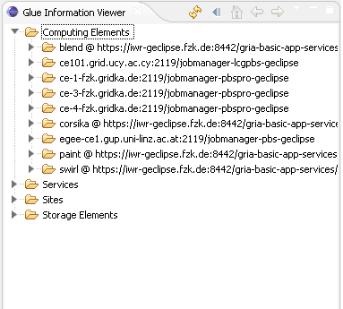

Monitoring is essential for the smooth operation of the Grid and trouble-shooting of problems as they arise. Monitoring the Grid allows the user to have a clearer view of the current state of the Grid. The GLUE Information Viewer provides a user with such a view. In addition the information is provided for the VO folder in the Grid Project View.
Current implementations for
The UI part of the Information System Framework is hidden from the developer. For proper implementation you only need to implement model classes of the Information System Framework - all views and informations about the Grid will be presented to the user using classes from this model.
The Glue Information Viewer
The links below provides specifics of how to extend or add support for a new middleware for the information system.